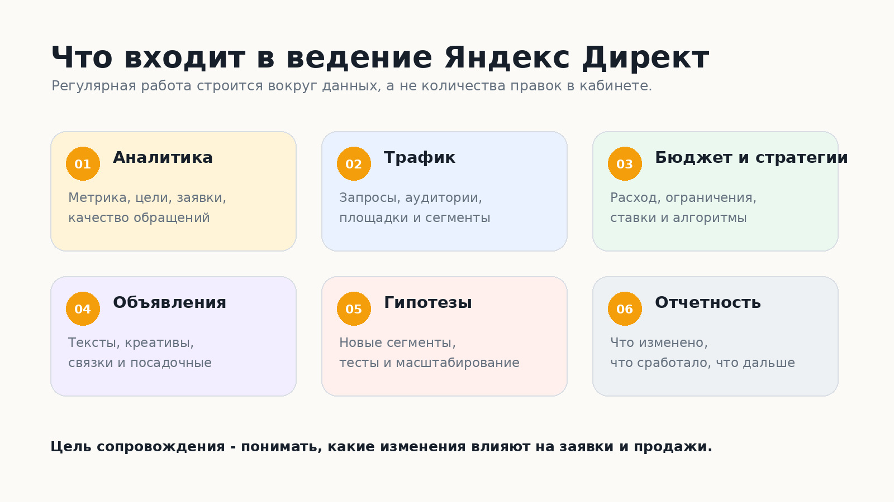
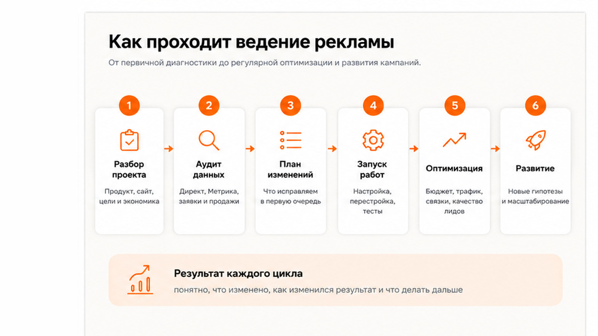

Блог о платном трафике
Заказать ведение Яндекс Директ
Заказать ведение Яндекс Директ имеет смысл, если вам нужен не разовый запуск рекламы, а постоянная работа с кампаниями: анализ статистики, оптимизация, контроль расходов, проверка качества заявок и тестирование новых гипотез.
Сам запуск - только начало. После него накапливаются реальные данные: какие запросы и аудитории дают обращения, где расходуется бюджет без результата, какие объявления работают лучше, как меняется стоимость заявки и что происходит с качеством лидов. Именно на этих данных строится дальнейшее сопровождение рекламы.
Я веду проекты лично, без передачи помощникам или ученикам. Работаю как ИП, напрямую с клиентом. Если нужно оценить мой подход и результаты по разным нишам, здесь уместна внутренняя ссылка на главную страницу и раздел с кейсами.
Что входит в ведение Яндекс Директ
Состав работ зависит от проекта, но нормальное сопровождение не сводится к периодической проверке рекламного кабинета.
Обычно в работу входят:
- аудит текущих кампаний, если реклама уже запускалась;
- проверка Яндекс Метрики и основных целей;
- анализ поисковых запросов, аудиторий, площадок и рекламных связок;
- контроль расходов и распределения бюджета;
- корректировка стратегий, ставок и ограничений;
- отключение слабых сегментов и развитие работающих;
- доработка объявлений и креативов;
- запуск новых гипотез;
- контроль стоимости и качества обращений;
- рекомендации по посадочной странице, если проблема находится не в рекламе;
- регулярная отчетность с выводами и списком изменений.
Ведение должно отвечать на простой вопрос: что именно мы меняем в рекламе и почему это должно улучшить результат.
Подробнее о составе работ - в статье «Услуги директолога».

Как начинается работа
Если кампании уже работают, сначала нужно понять их текущее состояние. Я смотрю структуру аккаунта, статистику, цели, расходы, поисковые запросы, площадки, объявления и доступные данные по обращениям.
Если рекламы еще нет, ведение начинается с подготовки и запуска. В этом случае сначала определяются аудитории, гипотезы, структура кампаний, аналитика и посадочные страницы.
На старте обычно нужны:
- Ссылка на сайт или посадочную страницу.
- Краткое описание продукта или услуги.
- География продаж.
- Планируемый рекламный бюджет.
- Доступ к Яндекс Директ и Яндекс Метрике, если они уже используются.
- Данные по заявкам и продажам, если реклама запускалась раньше.
Основной пароль от аккаунта передавать не нужно. Подрядчику можно выдать отдельный доступ к рекламному кабинету и аналитике.
Что происходит после запуска
После запуска реклама начинает собирать данные, и здесь начинается основная часть ведения.
Сначала я проверяю, корректно ли идут показы, клики и цели, нет ли очевидных проблем с трафиком и расходом. Затем появляются данные для более содержательных решений.
В процессе работы я смотрю не только на интерфейс Яндекс Директ. Для бизнеса важнее цепочка целиком:
показ рекламы -> переход -> поведение на сайте -> заявка -> качество обращения -> продажа.
Если заявки дешевые, но большая часть из них нецелевые, такую рекламу нельзя считать хорошей. И наоборот, более дорогой лид может быть выгоднее, если он чаще превращается в продажу.
Подробнее - в статье «CPA в Яндекс Директ».
Какие показатели нужно контролировать
Набор показателей зависит от бизнеса. Универсального KPI для всех проектов нет.
Чаще всего я смотрю на:
- расход;
- количество и стоимость целевых обращений;
- качество лидов;
- конверсию посадочной страницы;
- результат разных кампаний и сегментов;
- поисковые запросы;
- площадки РСЯ;
- распределение бюджета;
- динамику стоимости обращения;
- продажи и выручку, если эти данные доступны из CRM или сквозной аналитики.
CTR, цена клика и количество показов тоже полезны, но это диагностические показатели. Они помогают понять, что происходит внутри рекламы, но сами по себе не показывают бизнес-результат.
Когда стоит заказать ведение
Постоянное сопровождение особенно полезно в четырех ситуациях.
Реклама уже работает, но результат не устраивает
Есть расход и заявки, но стоимость обращения растет, качество лидов слабое или непонятно, какие кампании действительно работают. Здесь обычно нужен аудит текущей структуры и последующая оптимизация.
О том, как проверить текущие кампании, - в статье «Аудит Яндекс Директ».
Рекламу только запускают
Можно заказать настройку отдельно, но если Яндекс Директ должен стать постоянным каналом привлечения клиентов, логичнее сразу планировать дальнейшее ведение. Первые данные почти всегда требуют корректировок после старта.
Нужно масштабировать работающие кампании
Когда уже есть стабильные обращения, задача меняется. Нужно искать новые сегменты и гипотезы, расширять объем трафика и при этом следить, чтобы стоимость привлечения не вышла за допустимые рамки.
У собственника нет времени управлять рекламой самому
Яндекс Директ требует регулярного контроля и анализа. Если владелец бизнеса занимается этим между другими задачами, решения часто принимаются слишком поздно или только по поверхностным показателям.
Сколько стоит ведение Яндекс Директ
Стоимость работы специалиста и рекламный бюджет - разные расходы.
Рекламный бюджет оплачивается в Яндекс Директ и расходуется на размещение рекламы. Ведение оплачивается отдельно подрядчику за анализ, управление, оптимизацию и развитие кампаний.
Цена сопровождения зависит от объема рекламного бюджета, количества кампаний, сложности проекта, аналитики и дополнительных задач. Поэтому на этой странице нет смысла дублировать большую таблицу тарифов.
О цене сопровождения - в статье «Ведение Яндекс Директ: цена».
Перед началом работы лучше заранее зафиксировать:
- стоимость сопровождения;
- что входит в нее;
- как часто предоставляется отчетность;
- какие дополнительные работы оплачиваются отдельно;
- кто оплачивает рекламный бюджет;
- какие доступы получает специалист.
Как выбрать специалиста для ведения
При выборе подрядчика я бы смотрел не на обещания «снизить цену заявки в два раза», а на то, как человек собирается работать с проектом.
Хороший специалист до старта задает вопросы о продукте, экономике, прошлой рекламе, продажах и ограничениях бизнеса. Если обсуждение начинается и заканчивается только количеством ключевых слов и объявлений, этого мало.
Проверьте пять вещей:
- Есть ли кейсы с понятной задачей и результатом.
- Понимает ли специалист, как оценивать качество заявок, а не только клики.
- Получаете ли вы доступ к своему рекламному кабинету и аналитике.
- Понятно ли, что именно входит в ежемесячную работу.
- Есть ли прямой контакт с человеком, который реально принимает решения по кампаниям.
Как устроено ведение у меня
Я работаю напрямую с клиентом и сам веду рекламные кампании. Между бизнесом и специалистом нет отдельного аккаунт-менеджера, который только передает сообщения.
Обычно процесс выглядит так:
- Обсуждаем продукт, задачу, текущую рекламу и бюджет.
- Проверяю кабинет, Метрику, сайт и доступные данные по продажам.
- Определяю, что нужно исправить в первую очередь.
- Настраиваю или перестраиваю кампании, если это требуется.
- Запускаю работу и собираю данные.
- Регулярно оптимизирую рекламу, тестирую гипотезы и контролирую результат.
- В отчете показываю не только цифры, но и что было изменено, что сработало и что планируется дальше.
Если в процессе видно, что ограничение находится на сайте, в оффере или обработке заявок, я отдельно это отмечаю. Иногда повышать эффективность нужно не внутри рекламного кабинета.

Что нужно подготовить перед заказом
Чтобы быстрее оценить проект, достаточно прислать:
- сайт;
- нишу и географию;
- примерный рекламный бюджет;
- что уже запускалось;
- текущую стоимость заявки, если она известна;
- информацию о качестве обращений;
- цель рекламы: заявки, продажи, звонки, заказы или другой результат.
Если части данных нет, это не проблема. Их можно собрать после получения доступов.
Можно ли заказать только ведение уже настроенных кампаний
Да. Полностью пересобирать аккаунт только ради смены подрядчика не нужно.
Сначала имеет смысл провести аудит и понять, какие элементы действительно требуют изменений. Рабочие кампании можно сохранить, а слабые участки доработать постепенно.
Нужно ли вести Яндекс Директ каждый месяц
Если реклама используется постоянно, сопровождение тоже обычно должно быть постоянным. Кампании работают в меняющейся среде: меняется спрос, конкуренты, поведение пользователей, накопленные данные и эффективность отдельных связок.
Если реклама запускается короткими периодами, например только в сезон, формат работы можно привязать к этим периодам.
Итог
Запрос «заказать ведение Яндекс Директ» обычно означает, что бизнесу нужен подрядчик, который возьмет на себя постоянную работу с рекламой после запуска.
Смысл ведения - не в количестве внесенных правок, а в регулярных решениях на основе данных: где сократить расход, что усилить, какие гипотезы проверить и как связать рекламу с реальными обращениями и продажами.
Если вы хотите передать Яндекс Директ на постоянное сопровождение, здесь уместна внутренняя ссылка на контакты или главную страницу с формой связи.